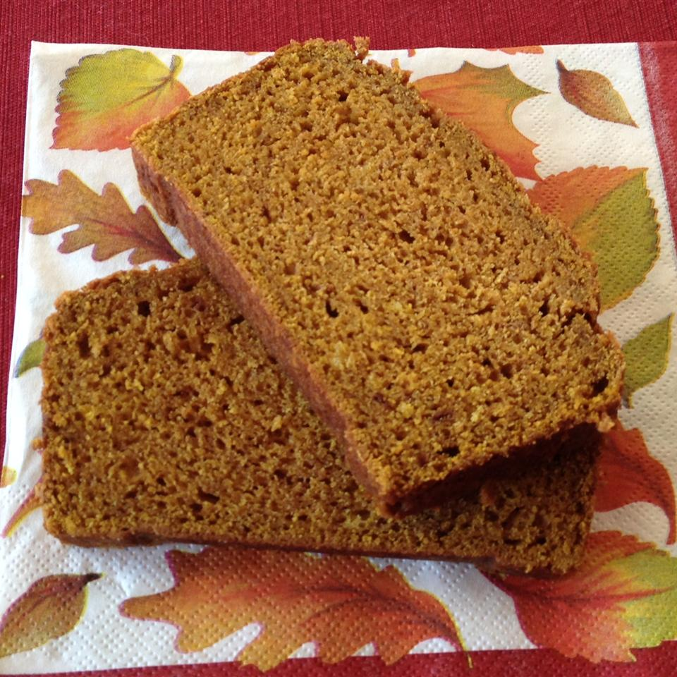

Spiced Pumpkin Bread

Description
A pumpkin loaf spiced with cinnamon, ground cloves, and nutmeg. I came up with this
recipe after many failed attempts at pumpkin loaf. I adapted a favorite banana loaf
recipe and this was the result. Yum! This recipe yields 3 loaves. Stock your freezer!
Ingredients
- 1 1/2 cups white sugar
- 1 cup light brown sugar
- 1 cup butter, melted
- 2 eggs
- 1 tablespoon vanilla extract
Steps
- Preheat oven to 350 degrees F (175 degrees C).
- Mix white sugar, brown sugar, and melted butter together in a large bowl.
Stir in eggs and vanilla extract; mix in pumpkin until thoroughly combined.
- Whisk flour, cinnamon, baking powder, baking soda, nutmeg, cloves, and salt together in a
separate bowl. Mix flour mixture into pumpkin mixture until incorporated.
Pour batter into three 5x9-inch loaf pans. Smooth batter evenly in each pan.
- Bake in the preheated oven until a toothpick inserted in the middle of each loaf comes
out clean, 45 to 50 minutes.